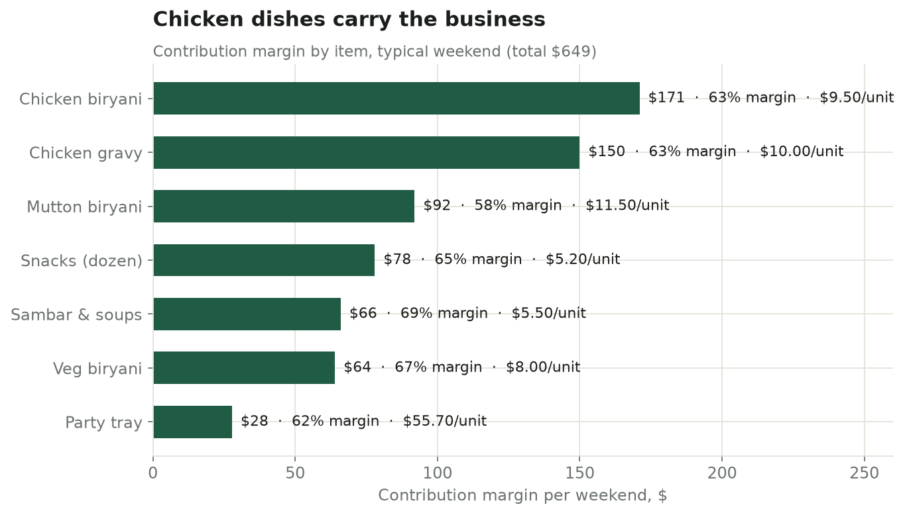
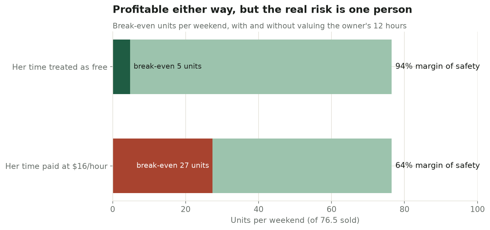
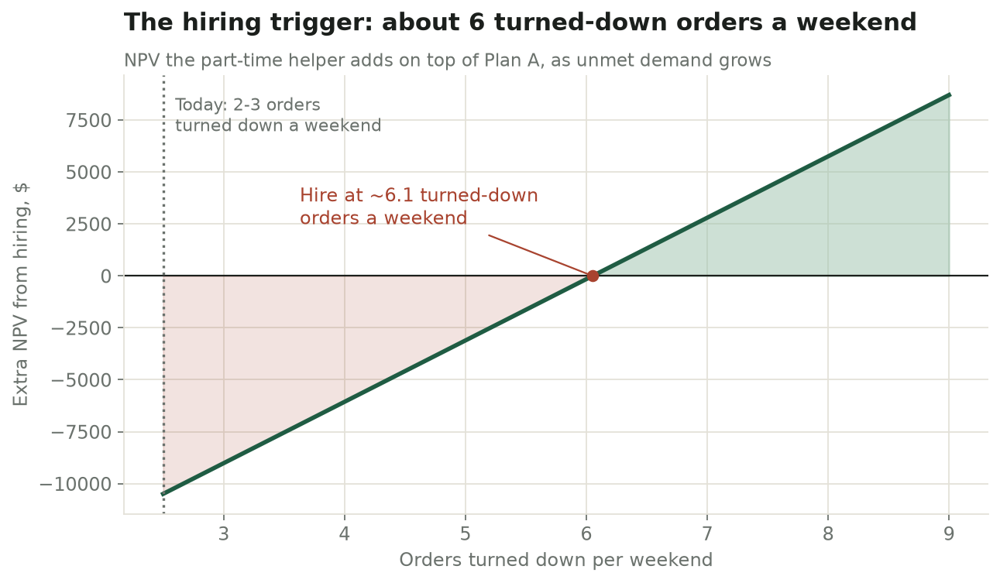

Pravik's Kitchen: equipment, a helper, or both?
My mother runs a weekend home-cooked South Indian food business. She cooks alone for about 12 hours a weekend, her main dishes sell out, and she turns customers away. I priced every item, found the break-even and valued two ways to add capacity.
The business keeps no written records, so every price, cost and volume is my estimate, calibrated to the roughly $1,000 she takes in on a normal weekend.
Unit economics
Cooking at home and taking cash or Zelle means almost no fixed costs. I split the one mixed cost, the household gas and electric bill, with the high-low method: each extra dish adds about $0.30, and the remaining base bill belongs to the household, not the business. Across seven menu items, each unit sold contributes $8.48 on average.

The hidden cost is her time
Treating her 12 hours as free, she breaks even at 5 items a weekend, a 94% margin of safety. Paying her time at $16 an hour moves break-even to 27 items and the margin to 64%. The business can survive a slow season. What it cannot survive is her stopping.

The capacity decision
The constraint is capacity, not demand: she turns down two to three orders a weekend. Most of her time goes into watching each batch, so a pot twice the size takes about the same time.
| Plan A: equipment | Plan B: equipment + helper | |
|---|---|---|
| Upfront | $2,500 | $2,500 |
| Extra per year | $300 upkeep | + $4,992 helper, +12 party trays |
| NPV at 16.5% | +$4,650 | −$5,845 |
| Decision | Accept | Wait |

Recommendation
Buy the equipment now; it pays for itself in under two years and stops her turning people away, and it still clears with 20% fewer orders. Hire a part-time helper once she is turning down about six orders a weekend, or sooner if the hours start to wear on her: each hour she gets back is worth about $51 of profit, against a $16 wage.